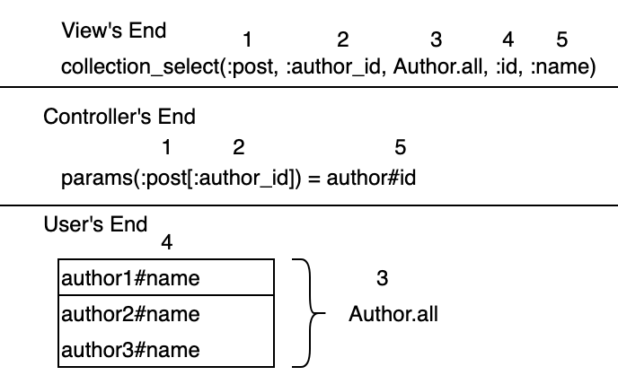

TLDR;
collection_select(:post, :author_id, Author.all, :id, :name)Assume we have a relationship between a single author having many posts. Our post model should contain the following attributes:
Post#id
Post#title
Post#message
Post#author_idLikewise, our Author Model should contain the following attributes:
Author#id
Author#name
We then want to build a drop down menu that will give us the the id of
the author that the user selects, and in order to follow convention we
also want to save that to the parameters. If we want to access our
Author#id in
params[:post[:author_id]] we write,
collection_select(:post,:author_id,...)We then want to pass to all of the items that collection_select will display.
collection_select(:post,:author_id,Author.all,...)
The next argument it takes is the value we want to return. Since we are
expecting
params[:post][:author_id] we want to
pass in Author#id. So we pass in the
method of an instance of Author.
collection_select(:post,:author_id,Author.all,:id,...)
Finally we pass in the value that we want to end user to see it as in
the drop down box. In our case we will use
Author#name.
collection_select(:post,:author_id,Author.all,:id,:name)This method can be visualized easier in the follow graph. 
And if you have any questions for me, feel free to shoot me an email below.
Thanks for reading!